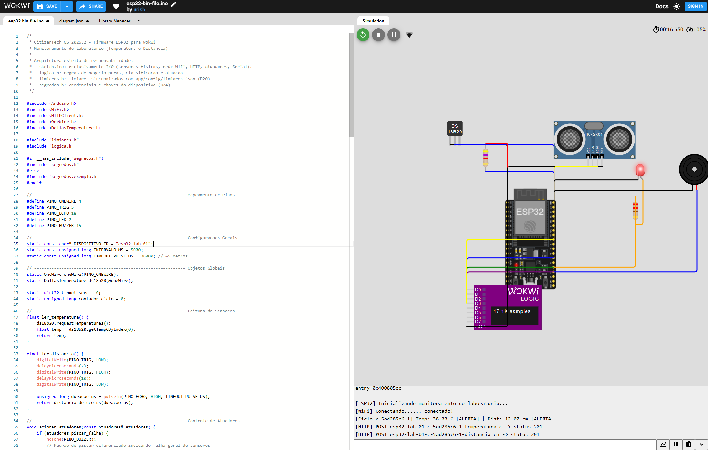

Disciplina: AI Computer Systems and Sensors · Global Solution 2026.2
Integrantes (nome completo + RM):
Problema. Quem está migrando de carreira para monitoramento industrial e IoT precisa praticar três coisas: ler sensores, ajustar limiares e reagir a alarmes. Laboratório com instrumentação é caro e se concentra nos grandes centros, e quem trabalha durante o dia raramente consegue frequentar uma bancada presencial.
Público beneficiado. Profissionais graduados e experientes em transição de carreira que usam a plataforma CitizenTech e escolhem o destino "Analista de Monitoramento/IoT Industrial". É o mesmo público das demais disciplinas.
Evidência de relevância. O snapshot de mercado do projeto, gerado a partir dos microdados públicos do Novo Caged (MTE/PDET), registra 3.445 admissões formais em 2024 de pessoas com ensino superior completo ou mais nas 7 ocupações CBO curadas desse destino. Dessas, 2.269 (66%) foram no Sudeste, 1.356 só em São Paulo, e 118 em toda a região Norte. A demanda existe e está concentrada onde já há mais laboratórios. Uma bancada simulada ou de baixo custo, ligada a uma plataforma, leva a prática para quem está longe deles. Os números são admissões observadas, não vagas abertas nem chance individual de contratação. Fonte: snapshot_mercado.json do recorte R29, campo contexto_regional (SHA-256 do painel 33a89898…e922c5).
Contribuição para o CitizenTech. A plataforma distingue competência declarada (vinda do currículo) de competência demonstrada. A bancada dá à pessoa um lugar para praticar a competência de monitoramento com dados reais da própria sessão, e a leitura de cada sensor chega à plataforma com o mesmo critério de risco usado em todo o sistema.
Fenômeno na bancada
temperatura do equipamento ──> DS18B20 (1-Wire, GPIO 4)
aproximação da zona de risco ─> HC-SR04 (TRIG GPIO 5, ECHO GPIO 18)
|
v
ESP32 · firmware C++ (Arduino Core), ciclo a cada 5 s
logica.h classifica cada sensor: normal / atenção / crítico / ERRO
decide o alerta local pela pior classe:
LED vermelho (GPIO 2) .... atenção ou crítico
buzzer (GPIO 15) ......... crítico
LED piscando ............. os dois sensores em falha
monta um JSON por métrica (montar_json)
|
| POST /leituras (JSON, cabeçalho X-Device-Key)
v
Servidor Python · FastAPI, módulo citizentech.leituras
valida e reclassifica com os mesmos limiares
grava em CSV · exibe por GET /leituras e na tela "Laboratório" da web
outbox SQLite ──> AWS Lambda (disciplina de Cloud)
Origem dos dados. As leituras são do próprio dispositivo: temperatura em °C do DS18B20 e distância em cm calculada pelo tempo de eco do HC-SR04 (duração_us × 0,0343 / 2). Não há base externa.
Limiares. Ficam num único arquivo, app/config/limiares.json. O header do firmware limiares.h é gerado a partir dele (app/tools/gerar_limiares_h.py, que grava o SHA-256 de origem 283065eb…), e a API e a Lambda leem o mesmo JSON. Ninguém digita limiar em código.
| Métrica | Direção | Normal | Atenção | Crítico | Erro de sensor |
|---|---|---|---|---|---|
temperatura_c |
maior é pior | < 35 °C | 35 ≤ t < 45 | ≥ 45 °C | −127 °C (DS18B20 desconectado), NaN |
distancia_cm |
menor é pior | > 15 cm | 8 < d ≤ 15 | 0 ≤ d ≤ 8 cm | sem eco (timeout de 30 ms), NaN, < 0 |
Status por sensor e atuadores. Cada sensor recebe o status OK (normal), ALERTA (atenção ou crítico) ou ERRO. O atuador segue a pior classe entre os sensores válidos: atenção acende o LED; crítico acende o LED e liga o buzzer (1 kHz); os dois sensores em ERRO fazem o LED piscar três vezes por ciclo.
JSON transmitido (um por métrica e por ciclo; exemplo real do cenário crítico):
{"schema_version":"1.0","evento_id":"esp32-lab-01-c-ec127e43-3-temperatura_c",
"dispositivo_id":"esp32-lab-01","tipo_dispositivo":"esp32",
"sessao_laboratorio_id":"demo-aicss-5aea1b35","ciclo_id":"c-ec127e43-3",
"metrica":"temperatura_c","unidade":"C","valor":48.0,"status":"ALERTA"}
O evento_id combina dispositivo, ciclo e métrica. Um reenvio do mesmo JSON não duplica o registro: a API responde 200 em vez de 201. O sessao_laboratorio_id só vai no JSON quando a pessoa configura o código da sessão aberta na plataforma (LAB-XXXXXX).
Montagem do circuito (firmware/diagram.json):
| Componente | Ligação |
|---|---|
| DS18B20 | VCC → 3V3, GND → GND, DQ → GPIO 4, resistor de pull-up de 4,7 kΩ entre DQ e 3V3 |
| HC-SR04 | VCC → 5V, GND → GND, TRIG → GPIO 5, ECHO → GPIO 18 |
| LED vermelho | GPIO 2 → resistor 220 Ω → anodo; catodo → GND |
| Buzzer | GPIO 15 → buzzer → GND |
A bancada simula a rotina de um analista de monitoramento: acompanhar uma grandeza que sobe e outra que desce, e reagir quando passam do limite.
LAB-XXXXXX válido por 4 horas e o configura no dispositivo. As leituras com esse código aparecem na tela da sessão com os indicadores calculados (contagem, alertas, média, máximo e mínimo por métrica). Para o destino IoT, o plano de preparação traz essa sessão como checkpoint opcional. Declaramos o limite: a sessão não muda sozinha o estado da competência; a competência passa a "demonstrada" pelo exercício diagnóstico da plataforma.limiares.json. Na evidência da §5, as 16 leituras enviadas receberam da API exatamente o risco que o firmware calculou, inclusive nas fronteiras (35,0 °C, 15,0 cm, 45,0 °C, 8,0 cm).logica.h, C++ puro. Ela compila no computador com g++ -std=c++17 -Wall -Wextra -Werror e tem testes automatizados. O sketch.ino só faz entrada e saída.Evidência A — lógica do firmware → JSON → servidor → CSV (evidencias/20261116_logica_firmware_host.txt). O script app/tools/demo_firmware_aicss.py compila um harness (app/tools/aicss/demo_cenarios.cpp) com a mesma logica.h e o mesmo limiares.h do firmware. Para cada entrada, imprime a classe de cada sensor, a decisão dos atuadores e o JSON que o sketch.ino montaria. Em seguida envia esse JSON ao POST /leituras da API Python e lê o histórico gravado em CSV. Resultado: 10 casos, 16 leituras enviadas, 16 gravadas, 0 falhas.
| # | Entrada (temperatura / distância) | Status do firmware | Atuadores decididos | Envio e registro |
|---|---|---|---|---|
| 1 | Normal 25,0 °C / 25,0 cm | OK / OK | LED apagado, buzzer desligado | 2 JSON → 201, risco normal |
| 2 | Atenção 38,0 °C / 12,0 cm | ALERTA / ALERTA | LED aceso, buzzer desligado | 2 JSON → 201, risco atencao |
| 3 | Crítico 48,0 °C / 5,0 cm | ALERTA / ALERTA | LED aceso, buzzer ligado | 2 JSON → 201, risco critico |
| 4 | Fronteira 34,9 °C / 15,1 cm | OK / OK | nenhum | 201, normal |
| 5 | Fronteira 35,0 °C / 15,0 cm | ALERTA / ALERTA | LED | 201, atencao |
| 6 | Fronteira 45,0 °C / 8,0 cm | ALERTA / ALERTA | LED + buzzer | 201, critico |
| 7 | Misto 25,0 °C / 6,0 cm | OK / ALERTA | LED + buzzer (pior classe) | 201 normal + 201 critico |
| 8 | DS18B20 desconectado (−127 °C) / 25,0 cm | ERRO / OK | nenhum | só a distância é enviada |
| 9 | 38,0 °C / HC-SR04 sem eco | ALERTA / ERRO | LED | só a temperatura é enviada |
| 10 | Os dois sensores em falha | ERRO / ERRO | LED piscando | nada é enviado |
Trecho do CSV gravado pela API (cenário crítico):
evento_id,dispositivo_id,sessao_laboratorio_id,ciclo_id,tipo_dispositivo,metrica,unidade,valor,risco,alerta,estado,medido_em,criado_em
esp32-lab-01-c-ec127e43-3-temperatura_c,esp32-lab-01,demo-aicss-5aea1b35,c-ec127e43-3,esp32,temperatura_c,C,48.0,critico,True,pendente_nuvem,2026-11-16T22:25:19Z,2026-11-16T22:25:19Z
esp32-lab-01-c-ec127e43-3-distancia_cm,esp32-lab-01,demo-aicss-5aea1b35,c-ec127e43-3,esp32,distancia_cm,cm,5.0,critico,True,pendente_nuvem,2026-11-16T22:25:19Z,2026-11-16T22:25:19Z
Evidência B — compatibilidade com o servidor modelo da disciplina (evidencias/20261116_compat_servidor_modelo.txt). Os 6 JSON dos três cenários foram enviados também ao servidor/servidor.py fornecido no enunciado. O servidor respondeu 201 a todos, exibiu cada leitura no terminal (esp32-lab-01 temperatura_c=48.0 status=ALERTA) e gravou as 6 linhas no CSV dele.
Testes automatizados do firmware. app/tools/tests/test_firmware.py: 9 testes passando em 16/11. Eles cobrem a sincronia de limiares.h com o JSON, a compilação e execução de teste_logica.cpp com -Werror, fronteiras, falhas de sensor, conversão do eco e montagem do JSON (com e sem sessão, buffer pequeno, NaN e infinito).
Outras entradas tratadas pela API (evidência de CTP, 04_CTP_Python/): leitura sem valor → 400; -127 enviado por engano → 400; reenvio do mesmo evento_id → 200 sem duplicar; mesmo evento_id com valor diferente → 409; sem X-Device-Key → 401.
Compilação executada. Arduino CLI1.6.0, core ESP32 3.0.7, OneWire2.3.8/DallasTemperature4.0.6, 2 jobs. Build de16/11: programa1.046.369bytes/79%, RAM47.188/14%, exit0; incompatibilidade de ponteiro em HTTPClient::POST corrigida sem alterar regras. Build da demo17/11 com URL temporária: programa1.046.385bytes/79%, mesma RAM, exit0. Warnings externos OneWire mantidos. Toolchain portátil, sem chave real. Compilação.
Execução em17/11, 03h33–03h35 (UTC−3): binário local carregado no Wokwi web, sem token/conta pessoal. Os sensores virtuais foram realmente lidos por OneWire e TRIG/ECHO; não foram substituídos por constantes no firmware. API Python CTP isolada, base vazia e túnel HTTPS anônimo temporário: 6 POSTs201, 6 registros no CSV, dois por cenário. Aceite e limites, CSV original, GET real do servidor.
| Cenário | Ajuste °C/cm | Medido °C/cm | Classificação API | Atuadores medidos no VCD |
|---|---|---|---|---|
| Normal | 25/25 | 25,00/25,11 | normal/normal | LED0, buzzer0 |
| Atenção | 38/12 | 38,00/12,07 | atencao/atencao | LED1, buzzer0 |
| Crítico | 48/5 | 48,00/4,96 | critico/critico | LED1, PWM 1.000Hz |

Analisador lógico passivo registrou GPIO2/15/4/18; VCD e frequência verificados confirmam a atuação, além da imagem. PWM do crítico teve200 subidas nos últimos200ms. Áudio acústico não foi medido. Os PNG originais em alta resolução e os três VCD acompanham o aceite.
RED não omitido: ngrok falhou no handshake TLS (status−1, nenhum POST na API); cpuFrequency=max também falhou. Cloudflare HTTPS com CPU padrão aprovou os mesmos critérios, mudando só a URL da demo. Não foi provada a causa exata do encerramento TLS no servidor ngrok. Túneis e API foram encerrados. A chave era fictícia e o lote ficou pendente_nuvem: este ensaio não comprova Wokwi→AWS.
| Parte | Situação |
|---|---|
Lógica de classificação, atuadores e JSON (logica.h) |
Implementada e executada no computador (g++), mesma fonte do firmware |
Firmware completo (sketch.ino: leitura dos sensores, Wi-Fi, HTTP, LED, buzzer) |
Compilado e executado no Wokwi,3cenários até o CSV (§5.2); placa física sem sensores não foi usada |
| Sensores e atuadores | Simulados no Wokwi (wokwi-ds18b20, wokwi-hc-sr04, LED, buzzer); sem bancada física |
| Servidor Python que exibe e grava em CSV | Implementado e executado (API FastAPI de CTP e servidor modelo da disciplina) |
| Envio à nuvem | Implementado e executado pela outbox da API até a AWS Lambda (ver 06_Cloud/README.md) |
Limitações identificadas.
ERRO não são enviadas, então o servidor não fica sabendo de um sensor com defeito.medido_em é o horário de recebimento na API.Arquivo (01_AICSS/firmware/, cópia gerada de app/iot/firmware/) |
Responsabilidade |
|---|---|
sketch.ino |
entrada e saída: sensores, Wi-Fi, HTTP com X-Device-Key, LED, buzzer, Serial |
logica.h |
classificação, decisão dos atuadores, conversão do eco, montagem e escape do JSON |
limiares.h |
limiares gerados de app/config/limiares.json (não editar à mão) |
segredos.exemplo.h |
modelo de credenciais; o segredos.h real fica fora do Git |
teste_logica.cpp |
testes da lógica no computador |
diagram.json, libraries.txt |
circuito do Wokwi e bibliotecas (OneWire, DallasTemperature) |
README.md |
geração dos limiares, credenciais, execução no Wokwi e cenários |
Servidor: API de leituras em app/api/src/citizentech/leituras/ (cópia em 04_CTP_Python/codigo/). Evidência no computador: app/tools/demo_firmware_aicss.py e app/tools/aicss/demo_cenarios.cpp.
Como reproduzir a evidência A (Windows PowerShell; Python 3.11, uv e g++ no PATH):
# terminal 1: API de leituras em modo isolado
cd app\api
$env:DEVICE_KEY = '<chave da bancada>'
$env:CITIZENTECH_LEITURAS_CSV = "$PWD\leituras.csv"
uv run uvicorn citizentech.leituras.isolado:app --port 8001
# terminal 2: mesma DEVICE_KEY no ambiente
cd app\tools
uv run python demo_firmware_aicss.py --base http://127.0.0.1:8001 `
--csv ..\api\leituras.csv
uv run pytest tests/test_firmware.py -q